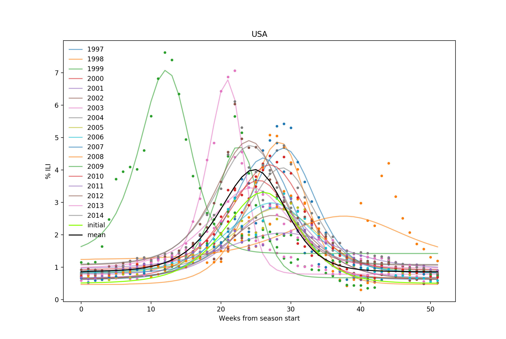
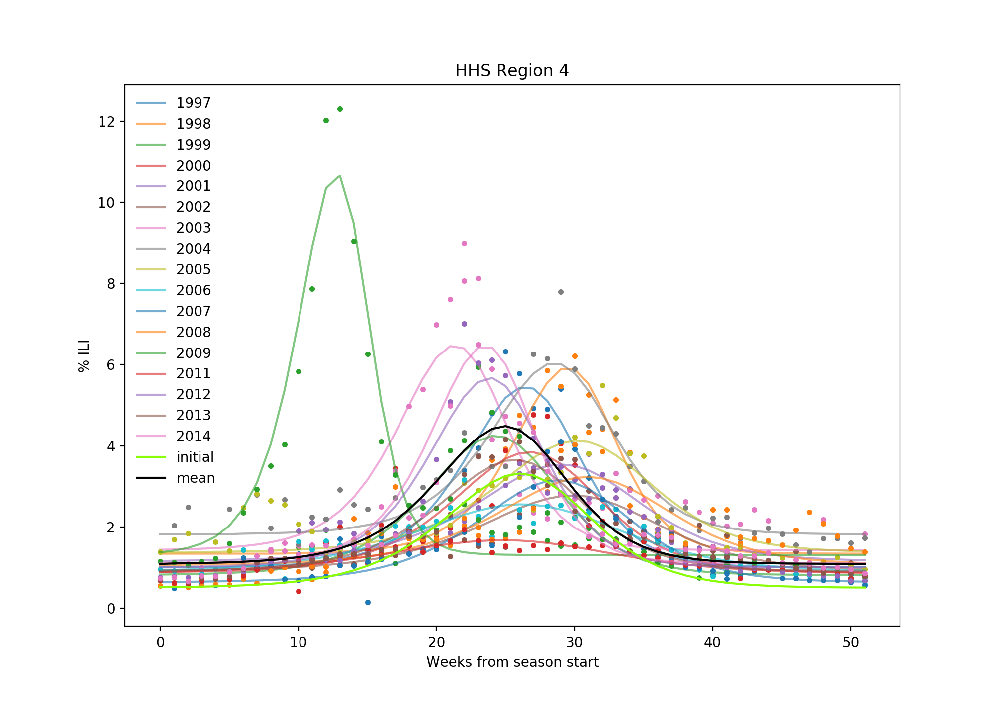
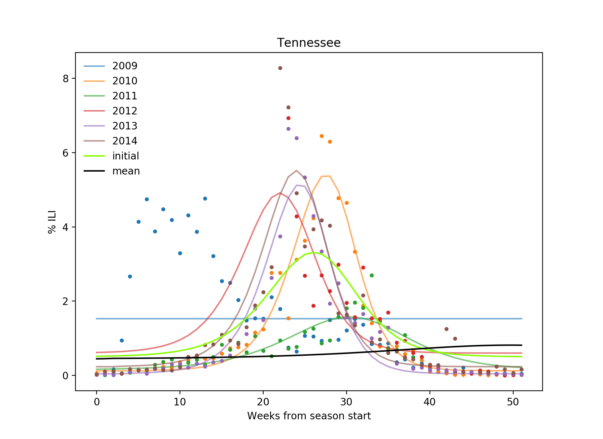
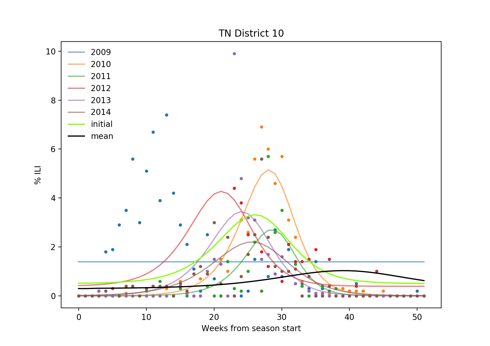

Best results so far, using truncated-Newton minimization, with these intervals and starting points:
beta gamma onset base
min: 0.5000 1.0000 -15.0000 0.0000
init: 1.3300 1.0400 0.0000 0.5000
max: 2.5000 2.5000 10.0000 2.0000
season beta gamma onset base SSE 1997 1.4009 1.0528 3.1175 0.6237 4.458 1998 1.4482 1.0616 6.9495 0.4674 3.288 1999 2.0105 1.5012 6.1408 0.6713 4.067 2000 1.3382 1.0354 0.0073 0.6323 2.299 2001 1.4527 1.1729 1.9747 0.6711 2.799 2002 1.3574 1.1059 -0.7224 0.6140 3.705 2003 2.0182 1.4126 6.0000 0.7834 3.653 2004 1.4250 1.0977 5.0042 0.8970 3.251 2005 1.3385 1.0891 -0.4806 0.8049 3.600 2006 1.3305 1.0734 -0.7297 0.8182 4.248 2007 1.3381 1.0001 5.2215 0.8175 7.380 2008 1.1824 1.0000 1.7253 1.2371 22.050 2009 1.4897 1.0435 -7.2927 1.4211 12.715 2010 1.3046 1.0000 1.4975 0.9185 3.067 2011 1.3511 1.1611 -4.4018 0.9445 1.522 2012 1.3372 1.0000 0.2840 1.0627 6.109 2013 1.3172 1.0461 -2.8432 0.9708 4.767 2014 1.3278 1.0002 -0.0122 1.0813 8.517 ---------------------------------------------------- mean: 1.4316 1.1030 1.1911 0.8576 5.639 stdv: 0.2165 0.1359 3.7240 0.2330 4.734 |
 |
season beta gamma onset base SSE 1997 1.4087 1.0292 4.6470 1.0041 10.022 1998 1.5647 1.1397 9.7856 1.3403 8.826 1999 1.3571 1.0327 0.0732 0.8134 12.417 2000 1.3130 1.0191 0.7514 0.8805 11.025 2001 1.2923 1.0313 1.0000 1.1551 6.268 2002 1.3196 1.0824 0.4063 0.9183 5.967 2003 1.3987 1.0001 0.1334 1.4253 37.451 2004 1.3627 1.0041 5.7601 1.8179 18.694 2005 1.2779 1.0015 3.0000 1.3691 18.923 2006 1.2066 1.0000 -6.8501 0.8880 4.613 2007 1.3388 1.0618 2.0258 0.6360 6.224 2008 1.2895 1.0400 2.0893 1.0603 13.525 2009 1.6537 1.0396 -3.0000 1.3073 21.844 2010 Linear search failed 2011 1.5334 1.3474 -7.3729 0.8502 1.038 2012 1.3850 1.0044 1.9706 1.0035 19.071 2013 1.3775 1.0806 0.2614 0.9105 3.545 2014 1.4583 1.0310 3.4222 1.1028 24.508 ---------------------------------------------------- mean: 1.3846 1.0556 1.0649 1.0872 13.174 stdv: 0.1102 0.0813 4.0324 0.2804 9.032 |
 |
season beta gamma onset base SSE
2009 0.6110 1.8032 -2.4574 1.5270 108.389
2010 1.4341 1.0180 7.0000 0.1218 8.553
2011 1.3445 1.1318 -0.8754 0.1520 4.324
2012 1.3623 1.0000 -0.6144 0.5994 18.825
2013 1.4570 1.0411 3.9961 0.0426 13.710
2014 1.4106 1.0003 3.1664 0.2330 30.310
----------------------------------------------------
mean: 1.2699 1.1657 1.7025 0.4460 30.685
stdv: 0.2972 0.2886 3.2860 0.5151 35.711
|
 |
season beta gamma onset base SSE 2009 0.7222 1.5435 -0.5089 1.3900 170.145 2010 1.4023 1.0000 7.0000 0.0000 23.413 2011 1.9653 1.5520 10.0000 0.0000 21.083 2012 1.3397 1.0000 -2.5627 0.3887 10.194 2013 1.4493 1.1030 1.2866 0.0000 66.391 2014 1.4019 1.1297 -0.9894 0.0000 25.482 ---------------------------------------------------- mean: 1.3801 1.2214 2.3709 0.2965 52.785 stdv: 0.3612 0.2358 4.5595 0.5092 55.356 |
 |